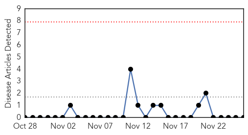
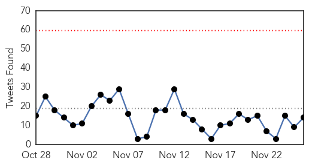
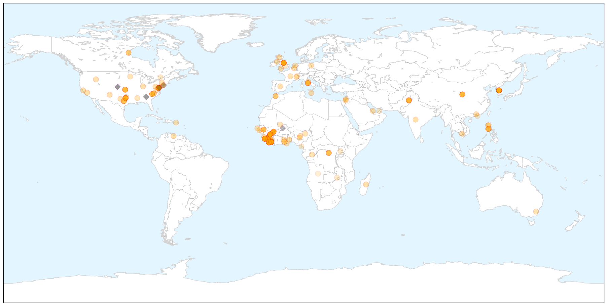
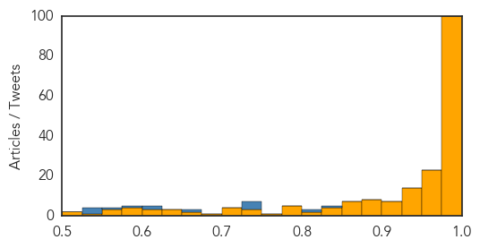

Hemmorhagic Fever
30-Day Web Trend
0 alerts, 0 warnings

30-Day Twitter Trend
0 alerts, 0 warnings

Article Locations


Article Confidences

Top Articles:
-
No articles found for Nov 26, 2014
Top Tweets:
-
No tweets found for Nov 26, 2014
Ebola
30-Day Web Trend
0 alerts, 0 warnings

30-Day Twitter Trend
0 alerts, 0 warnings

Article Locations

X

Article Confidences
Top Articles:
- 1.000
- Health authorities report 3 new Ebola cases in Liberia, previously declared Ebola free
- 1.000
- New Ebola case confirmed in Mali
- 1.000
- Ebola Vaccine 'Safe, Effective' According To First Study
- 1.000
- How world’s worst Ebola outbreak began with one boy’s death
- 1.000
- Ebola vaccine human trials promising
- 1.000
- South American Epidemic
- 1.000
- Mali confirms 2 new Ebola cases
- 0.999
- Researchers Say Tests of Ebola Treatments, Vaccines Are Accelerating
- 0.999
- Researchers Say Tests of Ebola Treatments, Vaccines Are Accelerating
- 0.999
- The Daily Reflector
- 0.999
- Researchers Say Tests of Ebola Treatments, Vaccines Are Accelerating
- 0.999
- Costs of responding to Ebola adding up
- 0.999
- Guinea president backs use of force to eradicate Ebola
- 0.999
- Corpses block entry to Sierra Leone hospital - Africa
- 0.999
- Archives > News > Elk Grove’s state rep leads Ebola hearing
- 0.999
- Mali Confirms Eighth Ebola Case
- 0.999
- Researchers Say Tests of Ebola Treatments, Vaccines Are Accelerating
- 0.999
- At 1 month, Ebola monitors in U.S. finding no cases
- 0.999
- Ebola Death Toll Reaches 5689
- 0.999
- Mali confirms eighth Ebola case, monitoring 271 people
- 0.999
- At 1 month, US Ebola monitors finding no cases
- 0.999
- Correction: Ebola-West Africa story
- 0.999
- WHO, NHSRC say Faisalabad man died of dengue, hepatitis
- 0.999
- Man died in Faisalabad was not Ebola-infected: WHO
- 0.999
- At one month, US Ebola monitors finding no cases
- 0.999
- Ebola: WHO Says The Identification Of Patient Contacts For Daily Monitoring In Progress
- 0.999
- UPDATE 2-Number of Ebola cases nears 16,000 as Sierra Leone loses ground - WHO
- 0.999
- UPDATE 1-Sierra Leone seeks U.S. military help to fight Ebola
- 0.998
- Ebola: infected bodies dumped outside hospital in Sierra Leone
- 0.998
- Ebola: UN crisis response mission opens new office in Mali
- 0.998
- 6 American Ebola survivors thankful for recovery
- 0.998
- First case of Italian contracting Ebola - update 3
- 0.998
- At 1-month mark, US Ebola screening program for travellers finding co-operation but no disease
- 0.998
- US Ebola screening program for travellers finding co-operation but no disease
- 0.998
- #Ebola workers in Sierra Leone dump bodies
- 0.997
- Sierra Leone seeks U.S. military help to fight Ebola
- 0.997
- Ebola burial teams in Sierra Leone dump bodies in street
- 0.997
- Sierra Leone seeks U.S. military help to fight Ebola
- 0.997
- WHO Satisfied with Level of Ebola Preparedness in Rwanda, Reports KT Press -- KIGALI, Rwanda, Nov. 25, 2014 /PRNewswire/ --
- 0.997
- Ebola outbreak 2014 latest news: Sierra Leone appeals for US to help
- 0.997
- Ebola UN crisis response mission opens new office in Mali
- 0.997
- Sierra Leone Workers Dump Bodies In Kenema
- 0.996
- Lab Results Negative For West African Ebola Virus In Valencia After Health Authorities Activate Alert
- 0.996
- China opens Ebola center in Liberian capital
- 0.996
- At 1 month, US Ebola monitors finding no cases
- 0.996
- Things Are Looking Up in Sierra Leone, Where Ebola Could Soon Slow Down
- 0.996
- After a month, U.S. Ebola monitors finding no
- 0.996
- Experimental Ebola vaccine passes 1st hurdle in U.S.
- 0.996
- Over 15,000 cases of Ebola reported worldwide- GHS
- 0.995
- Ebola's Racial Disparity
Showing top 50 articles...
Top Tweets:
- 0.836
- RT: Ebola deaths in Sierra Leone have tripled but USAID says HCWs volunteering to go to W Africa has decreased by 17%. ht…
- 0.808
- US quarantine moves hurting Ebola response in Africa: Harvard - Reuters
- 0.739
- RT: 10 Things You Really Need to Know About Ebola: 5 If you’re feeling sick think flu not Ebola. http://t.co/VZU6AG5s94
- 0.739
- RT: 10 Things You Really Need to Know About Ebola: 5 If you’re feeling sick think flu not Ebola. http://t.co/VZU6AG5s94
- 0.730
- RT: Number of Ebola cases nears 16000 as Sierra Leone loses ground: WHO http://t.co/LRBnyCG12R
- 0.730
- MAP. West Africa Ebola Outbreak: Total Cases 10 November 2014 http://t.co/3KxZMBVBUB
- 0.664
- MAP. Distribution of cases of Ebola by week of reporting in Guinea Sierra Leone and Liberia 18 Nov 2014 http://t.co/k5xaUIioNi
- 0.623
- RT: SierraLeone records 83 new Ebola cases and 33 deaths today. Half of the cases in Freetown & environs with most of the re…
- 0.609
- MAP. West Africa Ebola Outbreak: Liberia Movement Restrictions 12 November 2014 http://t.co/mpR830bR3M
- 0.581
- RT: Ahead of the holiday shares his thanks for those fighting the Ebola outbreak. A must-read from: http://t.…
- 0.561
- RT: 10 Things You Really Need to Know About Ebola: 3 Ebola outbreak is not affecting the safety of air travel. http://t.co/UXmit4…
- 0.538
- “Epidemiologists control disease at a population level.” CDC’s Dr. John Redd on battling Ebola in W. Africa. http://t.co/A8gidaxXVk
- 0.537
- Cautious but hopeful RT: Exp vaccine against Ebola virus declared safe after human trials http://t.co/dS5k0LhCLN
- 0.528
- Poster. 21-Day Investigation of Ebola Patient’s Direct Contacts in Sierra Leone http://t.co/HkxJ2KPnC0